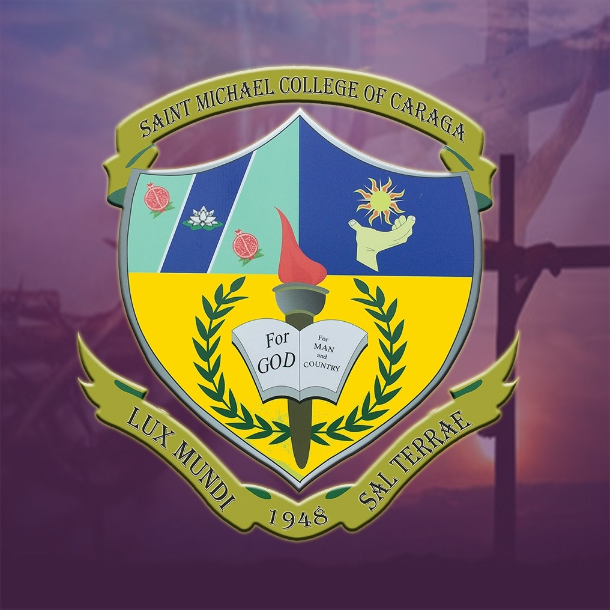
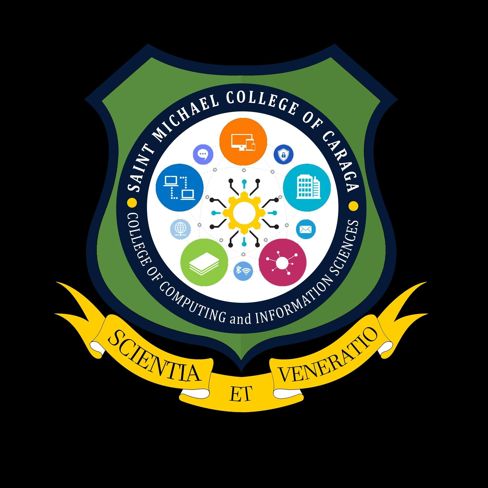
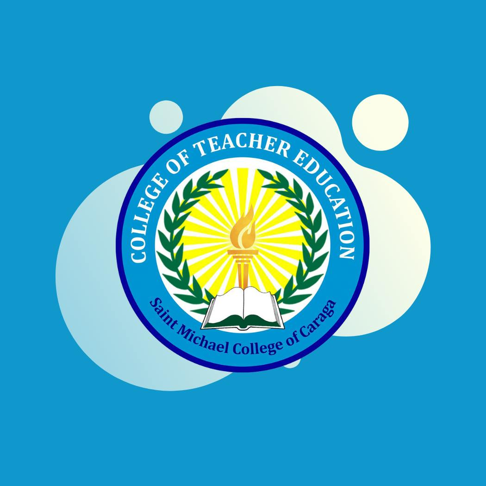
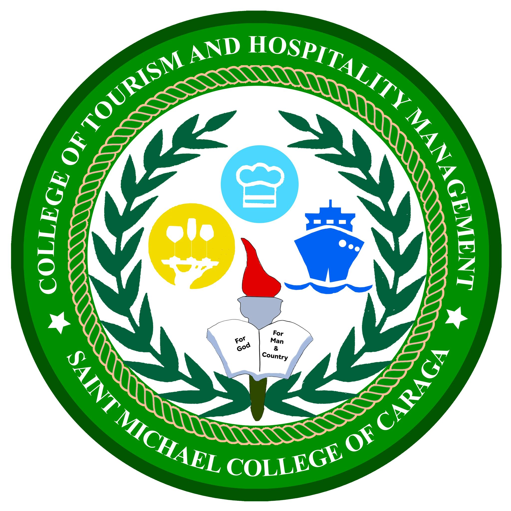
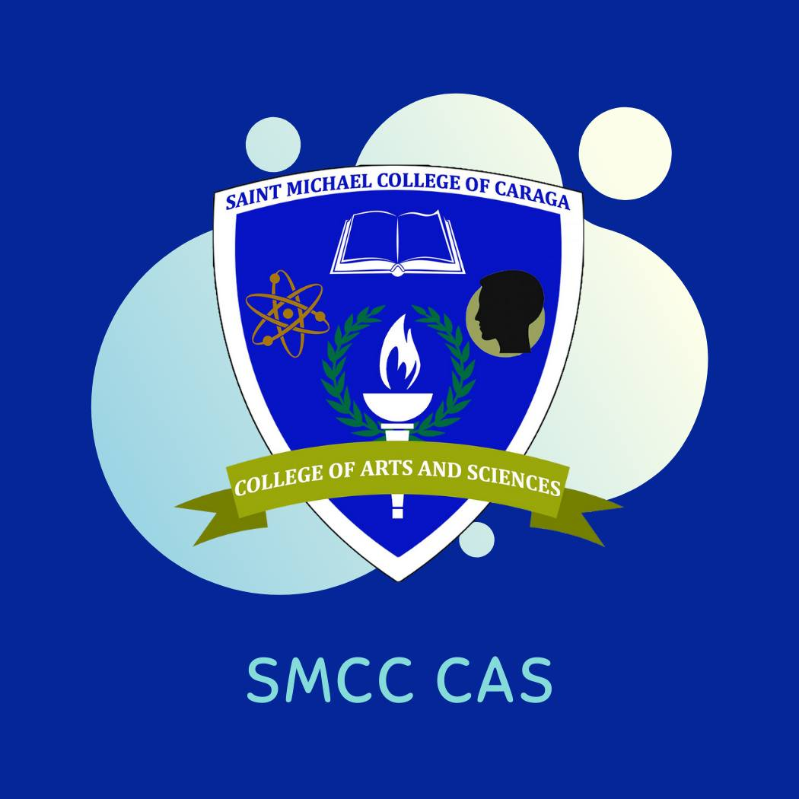

Saint Michael College of Caraga (SMCC), is a Catholic Diocesan School in Nasipit, Agusan del Norte upholding Spiritual Formation and Excellence in Teaching, Service, and Research.
Whether you seek academic excellence, faith-driven values, or opportunities for meaningful community engagement, Saint Michael College of Caraga stands as a transformative institution committed to shaping future leaders and contributing to the greater good.

SAINT MICHAEL COLLEGE OF CARAGA
Courses Offered
Saint Michael College of Caraga (SMCC) offers a diverse array of academic programs across various fields of study. Below is an overview of the courses available:
College of Computing and Information Science (CCIS):
- Bachelor of Science in Computer Science
- Bachelor of Science in Information Technology
- Bachelor of Library Information
- Bachelor of Science in Information System
College of Teacher Education: (CTE)
- Bachelor of Elementary Education
- Bachelor of Secondary Education
College of Tourism and Hospitality Management: (CTHM)
- Bachelor of Science in Hotel and Restaurant Management
- Bachelor of Science in Tourism Management
College of Arts and Science: (CAS)
- Bachelor of Arts in Political Science
- Bachelor of Science in Criminology
In addition to these bachelor's programs, SMCC provides various certificate courses to cater to different educational needs.




AVAILABLE COURSE
Service
Academic Services
Admissions and Registration:
-Assistance with enrollment, evaluation, and academic records.
-Information on courses, requirements, and deadlines.
Learning Resource Center (LRC):
-Access to physical and digital resources like books, journals, and e-libraries.
-Spaces for studying, research, and collaborative learning.
Scholarship Programs:
-Academic, athletic, and need-based scholarships for deserving students.
-Financial aid programs for underprivileged learners.
Student Support Services
Guidance and Counseling:
-Personal and career counseling.
-Academic advising and mental health support.
Health Services:
-Medical consultations, first aid, and wellness programs.
-Assistance in emergency medical cases.
-Student Organizations and Clubs:
-Opportunities for extracurricular engagement in sports, arts, and leadership activities.
Campus Ministry:
-Spiritual formation and values education.
-Religious events, retreats, and pastoral care.
Facilities and Auxiliary Services
Housing and Dormitories:
-On-campus or partnered accommodations for students.
-Clean and secure living facilities with basic amenities.
Canteen and Food Services:
-Affordable and nutritious meals for the campus community.
IT Services:
-Internet and computer laboratory access.
-Online platforms for learning and communication.
-Security Services:
-24/7 campus security for the safety of students and staff.
Community and Outreach Services
Extension Programs:
-Community engagement initiatives and outreach projects.
-Volunteer opportunities for students to serve society.
-Environmental Programs:
-Campus sustainability projects.
-Initiatives to promote ecological awareness.
Administrative Services
-Registrar’s Office:
-Management of academic transcripts, diplomas, and certifications.
Financial Services:
-Payment facilitation for tuition fees and other financial concerns.
-Assistance with installment plans or financial aid inquiries.
Alumni Relations:
-Maintaining connections with graduates.
-Organizing alumni reunions and networking events.
SMCC's SERVICES
Contact Us
Saint Michael College of Caraga (SMCC) is a private Roman Catholic institution located in Nasipit, Agusan del Norte, Philippines. Established in 1948, it offers a range of educational programs from basic education to higher education.
Contact Information:
Main Campus Address: Atupan Street, Barangay 4, Nasipit, Agusan del Norte, Philippines